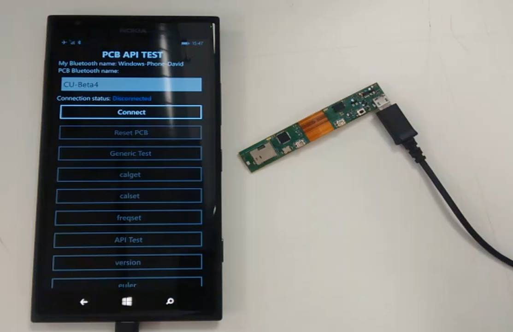

After creating the DSP mixing filter during my internship in 2015, I was then tasked with helping the development of a firmware of a PCB from a project called Cities Unlocked.
I was given a version of the firmware that was "hacked together" according to my team's leader Alistair Wharton. The PCB had a small ARM processor, a Bluetooth module and an IMU package that contained a compass, gyroscope and accelerometer sensors as well as built in fusion modes where more accurate readings from the IMU were generated. The goal of the PCB is to communicate with a phone application, where the phone could send commands to the PCB, and the PCB would respond with the information the phone requested.
I was tasked to adding various features into the code, debugging various known bugs and where possible eliminate them. To do this, I worked on creating a way to create a simple "debugger" that would print out messages at various points in the code so that we could track the firmware's progress in its loop. One of the main areas that my team leader was unhappy about was the turnaround time from sending a message from the phone to receiving the message from the PCB on the phone was too long. I was able to improve the firmware in the PCB by removing several bottlenecks that prevented the sensors from reading at their advertised rate.
Throughout the development of the firmware, I was also working on a companion Windows Phone application that would allow us to demonstrate all of the commands that could be sent to the PCB. Information about that application can be found here:
After a few weeks of development on the firmware, we were given a deadline that we had not foreseen or warned about. Thus there were several features that were left unfinished, but we instead worked on polishing the code into a state where another team would be able to pick up its development easily.
In the end I am pleased with the contribution I have made to the project. I have been able to experiment with C++ and exercise my brain into thinking of ways around bottlenecks and practised debugging embedded hardware.